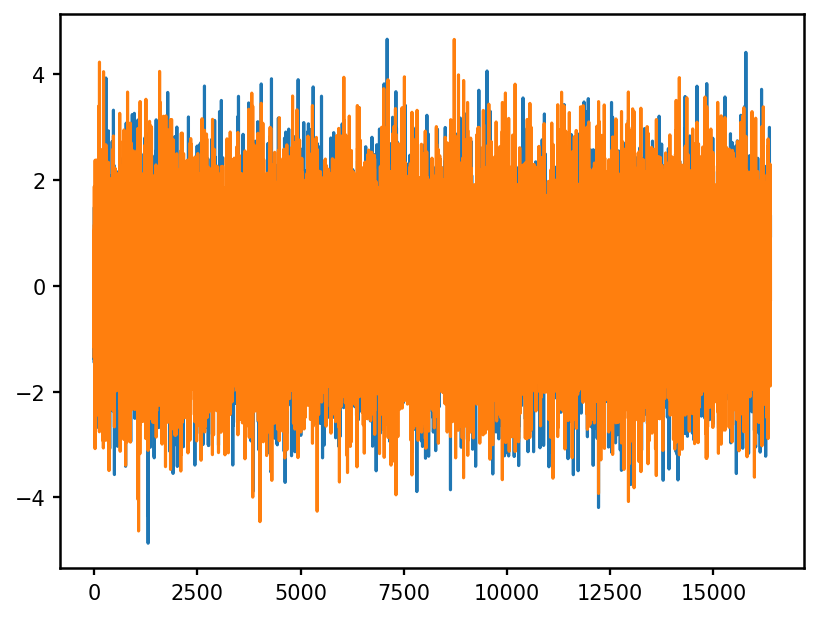
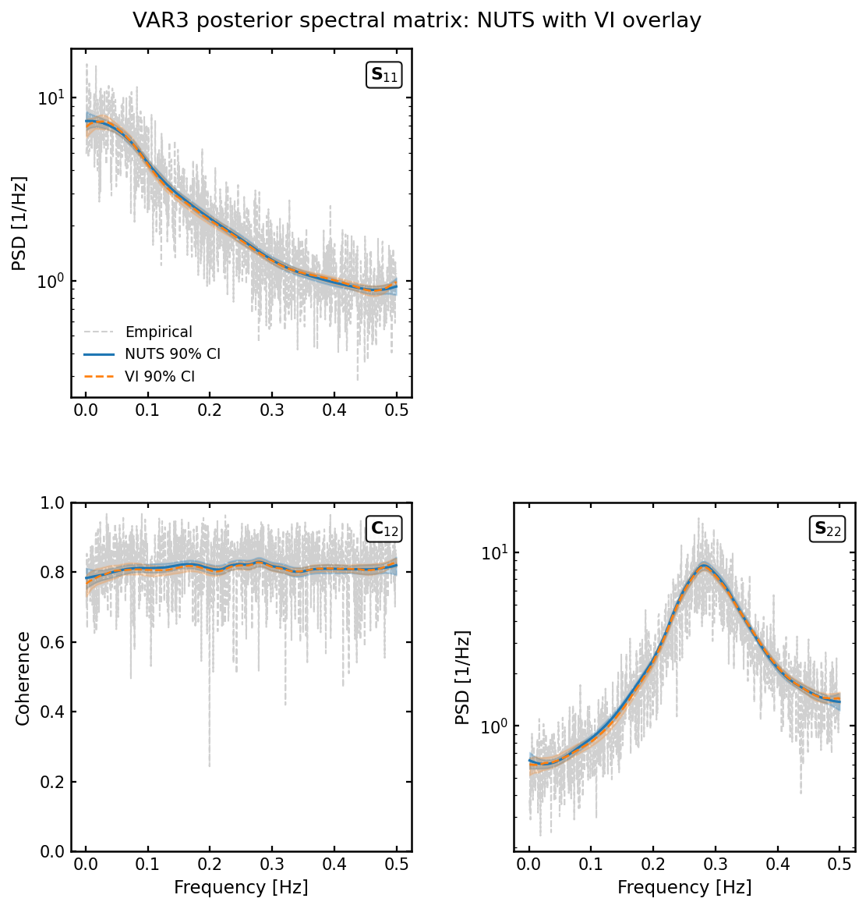

Quick Start#
This notebook runs a small two-channel VAR(2) example and compares the VI warm-start posterior with the NUTS posterior.
The model fitted here is still the real multivariate pipeline: time-domain data are converted to Wishart frequency-domain statistics, a log-P-spline spectral matrix is fitted, and posterior PSD/coherence summaries are reconstructed from the sampled spline weights.
! pip install -q LogPSplinePSD
Imports#
import os
os.environ.setdefault("XLA_FLAGS", "--xla_force_host_platform_device_count=1")
import jax
import matplotlib.pyplot as plt
import numpy as np
jax.config.update("jax_enable_x64", True)
from log_psplines.arviz_utils import (
get_multivar_posterior_psd_quantiles,
get_multivar_vi_psd_quantiles,
)
from log_psplines.data import TimeSeries
from log_psplines.mcmc import run_mcmc
from log_psplines.config import PipelineConfig
from log_psplines.plotting import PSDMatrixPlotSpec, plot_psd_matrix
from log_psplines.example_datasets import VARMAData
---------------------------------------------------------------------------
TypeError Traceback (most recent call last)
Cell In[1], line 11
7 import numpy as np
8
9 jax.config.update("jax_enable_x64", True)
10
---> 11 from log_psplines.arviz_utils import (
12 get_multivar_posterior_psd_quantiles,
13 get_multivar_vi_psd_quantiles,
14 )
File ~/work/LogPSplinePSD/LogPSplinePSD/src/log_psplines/__init__.py:8
5 __version__ = "0+unknown"
6 __commit_id__ = None
----> 8 from .basis import SplineBasis
9 from .models.spectrum import LogPSpline
10 from .models.matrix import SpectralMatrix
File ~/work/LogPSplinePSD/LogPSplinePSD/src/log_psplines/basis/__init__.py:1
----> 1 from log_psplines.basis.splines import SplineBasis
3 __all__ = ["SplineBasis"]
File ~/work/LogPSplinePSD/LogPSplinePSD/src/log_psplines/basis/splines.py:10
8 from scipy.interpolate import BSpline
9 from skfda.misc.operators import LinearDifferentialOperator
---> 10 from skfda.misc.regularization import L2Regularization
11 from skfda.representation.basis import BSplineBasis
13 from .penalty import create_bspline_roughness_penalty
File <frozen importlib._bootstrap>:1412, in _handle_fromlist(module, fromlist, import_, recursive)
File /opt/hostedtoolcache/Python/3.12.14/x64/lib/python3.12/site-packages/lazy_loader/__init__.py:78, in attach.<locals>.__getattr__(name)
76 elif name in attr_to_modules:
77 submod_path = f"{package_name}.{attr_to_modules[name]}"
---> 78 submod = importlib.import_module(submod_path)
79 attr = getattr(submod, name)
81 # If the attribute lives in a file (module) with the same
82 # name as the attribute, ensure that the attribute and *not*
83 # the module is accessible on the package.
File /opt/hostedtoolcache/Python/3.12.14/x64/lib/python3.12/importlib/__init__.py:90, in import_module(name, package)
88 break
89 level += 1
---> 90 return _bootstrap._gcd_import(name[level:], package, level)
File /opt/hostedtoolcache/Python/3.12.14/x64/lib/python3.12/site-packages/skfda/misc/regularization/_regularization.py:14
12 from ...representation.basis import Basis
13 from ...typing._numpy import NDArrayFloat
---> 14 from ..operators import Identity, Operator, gram_matrix
15 from ..operators._operators import OperatorInput
18 class L2Regularization(
19 BaseEstimator,
20 Generic[OperatorInput],
21 ):
File <frozen importlib._bootstrap>:1412, in _handle_fromlist(module, fromlist, import_, recursive)
File /opt/hostedtoolcache/Python/3.12.14/x64/lib/python3.12/site-packages/lazy_loader/__init__.py:78, in attach.<locals>.__getattr__(name)
76 elif name in attr_to_modules:
77 submod_path = f"{package_name}.{attr_to_modules[name]}"
---> 78 submod = importlib.import_module(submod_path)
79 attr = getattr(submod, name)
81 # If the attribute lives in a file (module) with the same
82 # name as the attribute, ensure that the attribute and *not*
83 # the module is accessible on the package.
File /opt/hostedtoolcache/Python/3.12.14/x64/lib/python3.12/importlib/__init__.py:90, in import_module(name, package)
88 break
89 level += 1
---> 90 return _bootstrap._gcd_import(name[level:], package, level)
File /opt/hostedtoolcache/Python/3.12.14/x64/lib/python3.12/site-packages/skfda/misc/operators/_identity.py:31
27 def __call__(self, f: T) -> T: # noqa: D102
28 return f
---> 31 @gram_matrix_optimization.register
32 def basis_penalty_matrix_optimized(
33 linear_operator: Identity[Any],
34 basis: Basis,
35 ) -> NDArrayFloat:
36 """Optimized version of the penalty matrix for Basis."""
37 return basis.gram_matrix()
File /opt/hostedtoolcache/Python/3.12.14/x64/lib/python3.12/site-packages/multimethod/__init__.py:294, in multimethod.register(self, *args)
289 """Decorator for registering a function.
290
291 Optionally call with types to return a decorator for unannotated functions.
292 """
293 if len(args) == 1 and hasattr(args[0], "__annotations__"):
--> 294 multimethod.__init__(self, *args)
295 return self if self.__name__ == args[0].__name__ else args[0]
296 return lambda func: self.__setitem__(args, func) or func
File /opt/hostedtoolcache/Python/3.12.14/x64/lib/python3.12/site-packages/multimethod/__init__.py:278, in multimethod.__init__(self, func)
276 def __init__(self, func: Callable):
277 try:
--> 278 self[signature.from_hints(func)] = func
279 except (NameError, AttributeError):
280 self.pending.add(func)
File /opt/hostedtoolcache/Python/3.12.14/x64/lib/python3.12/site-packages/multimethod/__init__.py:238, in signature.from_hints(cls, func)
236 hints = [type_hints.get(param.name, object) for param in params]
237 required = sum(param.default is param.empty for param in params)
--> 238 return cls(hints, required)
File /opt/hostedtoolcache/Python/3.12.14/x64/lib/python3.12/site-packages/multimethod/__init__.py:219, in signature.__new__(cls, types, required)
218 def __new__(cls, types: Iterable, required: int | None = None):
--> 219 return tuple.__new__(cls, map(subtype, types))
File /opt/hostedtoolcache/Python/3.12.14/x64/lib/python3.12/site-packages/multimethod/__init__.py:77, in subtype.__new__(cls, tp)
75 origin, args = typing.NewType, (arg,)
76 namespace = {"__origin__": origin, "__args__": args}
---> 77 return type.__new__(cls, str(tp), bases, namespace)
TypeError: metaclass conflict: the metaclass of a derived class must be a (non-strict) subclass of the metaclasses of all its bases
Simulate a two-channel VAR process#
The coefficient matrices below match the VAR3 study used elsewhere in the repository, but this notebook uses a smaller sample size and shorter inference settings.
varma = VARMAData(n_samples=2**14)
plt.plot(varma.data)
|03:53| LogPSpline | INFO | VAR sanity check passed: stationary AR dynamics (companion spectral radius=0.707107) with finite samples. Empirical stationarity passed (max_mean_shift_z=0.043, max_var_ratio=1.034, covariance_rel_drift=0.024).

Run VI warm start and NUTS#
These settings are small enough for an interactive quickstart. Increase N, n_warmup, n_samples, vi_steps, and n_knots for a real analysis.
config = PipelineConfig(
n_knots=10,
degree=2,
diffMatrixOrder=2,
n_warmup=500,
n_samples=750,
num_chains=2,
init_from_vi=True,
only_vi=False,
vi_guide="diag",
Nb=8,
target_accept_prob=0.9,
max_tree_depth=8,
true_psd=varma.get_true_psd(),
rng_key=7,
verbose=True,
)
idata = run_mcmc(varma.ts, config)
|07:23| LogPSpline | INFO | Wishart averaging (blocks=8): n=16384 -> Lb=2048, N=1024, p=2
|07:23| LogPSpline | INFO | Standardized data: scale ~1.35e+00
|07:23| LogPSpline | INFO | Inferred sampler type: multivar_blocked_nuts
|07:25| LogPSpline | INFO | Spline model: MultivariateLogPSplines(channels=2, knots=10, degree=2, penaltyOrder=2, N=1024, basis_shapes=[(1024, 11), (1024, 11), (1024, 11), (1024, 11)])
sample: 100%|██████████| 1250/1250 [00:01<00:00, 1010.23it/s, 31 steps of size 1.62e-01. acc. prob=0.96]
sample: 100%|██████████| 1250/1250 [00:00<00:00, 1503.34it/s, 31 steps of size 1.78e-01. acc. prob=0.96]
sample: 100%|██████████| 1250/1250 [00:02<00:00, 555.74it/s, 15 steps of size 3.49e-01. acc. prob=0.91]
sample: 100%|██████████| 1250/1250 [00:01<00:00, 761.26it/s, 15 steps of size 3.30e-01. acc. prob=0.93]
Compare VI and NUTS posterior PSDs#
fig, axes = plot_psd_matrix(
PSDMatrixPlotSpec(
idata=idata,
overlay_vi=True,
label="NUTS 90% CI",
vi_label="VI 90% CI",
channel_labels=["x0", "x1", "x2"],
show_knots=False,
save=False,
close=False,
)
)
fig.suptitle("VAR3 posterior spectral matrix: NUTS with VI overlay", y=1.02)
plt.savefig("_static/var3_psd_matrix.png", bbox_inches="tight")
plt.show()


What to check#
The diagonal PSD panels should be positive and broadly track the analytical PSD.
VI and NUTS should have similar large-scale structure; exact agreement is not expected for this very short smoke-test run.
For production runs, increase the warmup/draw counts and inspect the saved diagnostics from
PipelineConfig(outdir=...).